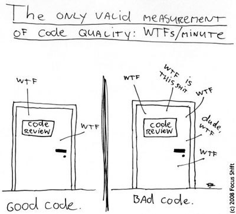

Keeping your code clean is almost as crucial as implementing features on time. Do you remember the times you had to deal with old code, that was created in rush and with huuuuuuuge technical debt? Well number of FPS (see below :P) was probably high as the sky and what is more you probably end up doing workaround or another dirty hack to get task done.

Good news - it doesn’t have to be that way. I had a chance to read a few books on maintaining clean code and what I can tell you is that you can improve your skills in minutes with few simple tricks (no. programmers don’t hate me and I don’t want to sell you any pills :P).
In this post I’ll describe some easy to use tips and tricks when it comes to variables for crafting better code - they’re really simple and you can start to use them right away! Trust me… it works!
Variables naming
Variables is probably the biggest set of names in your application code. So it’s crucial to name them properly. You probably never wondered you can improve something here, but from my experience some simple rules can vastly increase your coding skills. So let’s get started! :D
Use meaning names for variables
First thing is probably obvious, but use self-explanatory names. What I mean -
you shouldn’t use variables like i, var1, o1. Just look at snippet below:
FLAG = 2
def do_something(x):
y = filter(lambda z: z.flag == FLAG, x)
z = map(lambda z: z.name, y)
for e in z:
print("Give %s promotion!" % e)
And? Do you have any idea about what does this code suppose to do? You probably had to focus for a while. But if the author spent a few seconds more on this it could look like this:
GOOD_EMPLOYEE = 2
def do_something(employees):
good_employees = filter(lambda emp: emp.flag == GOOD_EMPLOYEE, employees)
good_employees_names = map(lambda emp: emp.name, good_employees)
for good_employee_name in good_employees_names
print("Give %s promotion!" % good_employee_name)
With just few changes in variable naming we came to the code that is easy to understand.
Always give variable name describing its content! There are some exceptions - as you
saw in lambdas above or in some cases in loops, but if you ever catch yourself wondering
what does this c means - change it.
Friend of mine once told me a golden rule for
variable naming - The bigger scope of variable is, the more descriptive the name should
be. So in case of variables in lambdas or one-line loops - you might consider names like c,
i, etc. but for function local variables or fields you should use really intuitive names.
Useless variables. Wait what!?
That one really improved my coding skills by far. Simply split complex expressions introducing new variables. Let’s consider again snippet from above. One could write it like that (pardon line length):
GOOD_EMPLOYEE = 2
def do_something(employees):
map(lambda s: print ("Give %s promotion!" % s),
map(lambda e: e.name,
filter(lambda e: e.flag == GOOD_EMPLOYEE, employees)))
Really, really unreadible. We all know keeping Python code neat is a good thing, but not to the point where code is hardly understandable (Personally I could live with such code, but only after changing function name to describe what the function does - we will get to that).
I would suggest introducing variables for each part of expressions so as to understand what they mean. Let’s again look at “good” code from above:
GOOD_EMPLOYEE = 2
def do_something(employees):
good_employees = filter(lambda emp: emp.flag == GOOD_EMPLOYEE, employees)
good_employees_names = map(lambda emp: emp.name, good_employees)
for good_employee_name in good_employees_names
print("Give %s promotion!" % good_employee_name)
At glance you can understand that we filter all employess to get good employees, after that we get list with their names and finally we print message to the user. Simple as that!
Units!
This point is short but crucial. If you ever encounter variable with particular unit, for example uptime of your application in milliseconds - use unit in variable name.
Look at this:
long time;
int purchaseAge;
Can you tell if you can add 5 days to time or 4 years to purchaseAge? Probably not…
long timeMilliseconds;
int purchaseAgeDays;
And now you can! You don’t have to scan different parts of projects to know what to expect. You just know that first variables hold milliseconds and second contains number of days.
Don’t use tricky names
If you use simple names it’s easier for anyone to remember, understand and pronounce variables.
Code looks more like a poetic masterpiece than a code. It’s easier to get grasp of employeeCount,
internalState than emplCnt or intrinsicStt.
I had an opportunity to work with some scientists on their code and trust me, this point is not so obvious for everyone :) In every line there were variables like d_hwhx, d_tauprhx, etc. Total nightmare. So the point is to use simple, commonly understandable phrases
Summary
That’s all for this post - it’s just the beginning, so stay tuned and I hope those simple rules will enchance your coding skills. I know for most of you they are obvious, but more advanced things are yet to come :D See you soon!